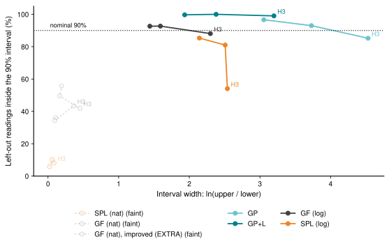

1The short version


The four approaches, and the older names you may have seen
| Label here | What it is | Earlier names |
|---|---|---|
| GF (log) GF (nat) | Growth-function fits (nls), best of four standard curves chosen by AIC; on the log or the natural scale | “Paine” (after Paine et al. 2012) |
| SPL | ASReml-R cubic smoothing spline | ASReml smoothing spline |
| GP | Gaussian process, Matérn 5/2, no mean function | V0 |
| GP+L | The same Gaussian process, with a logistic mean function | M-J |
Reading the labels
- Coverage is the share of days on which a 95% band contains the true curve. Simulation targets 0.95; the left-out-readings intervals are 90%.
- Failure count sits beside every error. A fit that fails counts as a miss.
- Every figure on a left-out-readings result carries the label in the box below.
2Why this matters
The problem
High-throughput phenotyping and field trials produce repeated measures of size over time: rosette area, canopy height, NDVI. Breeders and physiologists use them to ask when a genotype grows fastest, how quickly it grows relative to its size, and whether two genotypes differ. Those questions are about rates, not sizes: the absolute growth rate (AGR, the change in size per day) and the relative growth rate (RGR, the change per unit of size per day).
Rates are harder to estimate than sizes. A small error in a curve can become a large error in its slope, and the uncertainty has to be carried through that step correctly. The problem is worse when plants are measured only a few times, when some genotypes are measured much more often than others, or when one reading goes wrong.
Two families of method
Growth functions assume the curve has a known shape (logistic, Gompertz, monomolecular) with a few interpretable parameters. They are compact and can work with very few readings, but are only as good as the shape assumed. Flexible statistical models (smoothing splines and Gaussian processes) let the data draw the shape. They can follow curves that no standard function matches, but they lean harder on the data, and on their own priors when data are thin.
Our longer-term aim is to bring such methods into ASReml-R mixed models of field and controlled-environment growth. Before that, we need to know how each behaves on its own, which is what this report tests.
What we asked
- Sharp: how narrow are the bands, and how close is the estimated curve to the truth?
- Honest: do 95% bands contain the truth about 95% of the time?
- Robust: what happens as readings are removed, or when an early reading is a spike?
We used simulated plants, where the true curve is known, and real Arabidopsis data, where it is not.
3The four approaches
GF Growth functions
paine_fit_all() fits four curves by nls: monomolecular (SSasymp), three-parameter logistic (SSlogis), four-parameter logistic (SSfpl) and Gompertz (SSgompertz). The model is chosen by AIC within a scale (natural or log). Intervals come from multivariate-normal draws of the parameters using the scaled vcov(). The left-out-readings arms use variance = "none". An extra arm, natural_improved (varPower, gnls), is reported separately and is not part of the main comparison.
SPL ASReml smoothing spline
ASReml-R cubic smoothing spline: resp ~ day with random spl(day), fitted by REML. Slopes come from finite differences (h = 0.05 days) on the predictions and their covariance, and bands from multivariate-normal draws of the prediction covariance. On the log scale RGR is the slope and AGR is size × RGR. ASReml was run on one thread.
GP Gaussian process
A marginal-likelihood Gaussian process (fit_gp_marginal, Stan model gp_marginal_matern52_deriv.stan) with a Matérn 5/2 kernel, fitted on the log scale with constant residual standard deviation. RGR is the derivative f′ and AGR is exp(f) f′, both from joint posterior draws. A fit is flagged if divergences or treedepth hits reach 1% of draws, max R-hat exceeds 1.01, or minimum bulk ESS falls below 400.
Priors and software
- length-scale ~ inverse-gamma(2.789147, 16.092788)
- GP standard deviation ~ half Student-t(3, 0, sd_scale)
- slope b ~ normal(0, b_scale); intercept ~ Student-t(3, ly_med, sd_scale); sigma ~ half-normal(0, 1)
- rstan 2.32.7, R 4.5.2 confirm against sessionInfo
GP+L Gaussian process with a logistic mean
The GP above with a logistic mean function, sampled with adapt_delta = 0.99. Description to be checked against the M-J script before publishing; the poster session did not read that script.
Why the log scale
On the log scale RGR is simply the slope of the curve, and growth rates come from joint draws, which avoids dividing one uncertain number by another. We do not claim that the log scale causes any pattern in the coverage of the log growth-function arm; that was not isolated.
References.
- {.references} Paine CET et al. (2012) Methods Ecol Evol 3:245-256. doi:10.1111/j.2041-210X.2011.00155.x
- Carpenter B et al. (2017) Stan. J Stat Softw 76(1). doi:10.18637/jss.v076.i01
- Stan Development Team (2025) RStan 2.32.7. mc-stan.org
- Rasmussen CE, Williams CKI (2006) Gaussian Processes for Machine Learning. MIT Press
- Verbyla AP et al. (1999) J R Stat Soc C 48:269-311. doi:10.1111/1467-9876.00154
- Butler DG et al. (2023) ASReml-R Reference Manual 4.2. VSN International
- Junker A et al. (2015) Front Plant Sci 5:770. doi:10.3389/fpls.2014.00770
4The data
Arabidopsis C24 (rosette area)
One genotype (C24), days 1 to 44, from Junker et al. (2015; e!DAL record 1135FA_analysis.xlsx, CC BY 4.0). Plants were separated into moving and stationary groups from the sampling-density pattern. project notes say this matches the paper’s 384/100 split before cleaning; not checked against a file here
| Group | Plants | Readings | Readings per plant |
|---|---|---|---|
| moving | 331 | 5242 | 14 to 19 (median 15) |
| stationary | 94 | 303 | 2 to 6 (median 3) |
| all | 425 | 5545 |
Wheat (FIP, ETH Zürich)
Canopy height from six year-lots. Genotypes show a real imbalance, with checks measured far more often than test lines. The lodging cut points are not finalised, so the wheat data are described only.
Maize NDVI panel
Five time points per genotype with a published P-spline benchmark: a deliberately sparse case. Described only.
5Methods
Simulation design
- 25 scenarios × 50 simulated plants per scenario.
- Test half uses replicates 121 to 130.
- Sampling designs: dense, thin7, thin5, thin4 (readings per plant).
- Truth is a known, noise-free curve; bands are for that mean curve and its growth rates, not for a new reading.
Scoring rules
- Coverage is the mean, over datasets, of the share of days whose band contains the truth. A failed fit counts as a total miss, so no method gains by failing.
- Accuracy and band width are computed on fits that worked and always shown beside the failure count.
- Arms are compared only on scenarios every arm has, and paired by dataset (every method sees the same data).
- Monte Carlo error is reported; differences under about twice the standard error are not read.
- Coverage near 1 with very wide bands is not good calibration, so coverage is read next to width.
Left-out readings (Arabidopsis)
- H1 hides the last reading, H2 the last two, H3 everything after day 30.
- Intervals are 90%. Failed fits count as misses.
- Two trivial baselines are included for scale, including “repeat the last reading”.
- Where the cut falls relative to the plateau changes the ranking, so results are shown for each cut.
6Simulation tests
Coverage and band width
mm3_fits_all.csv (clean, test half, same datasets). GF: refit on GP+L’s datasets (paired). SPL (log), dashed and hollow: the older grid, other replicates, unpaired; failed fits there: dense 6%, thin7 38%, thin5 46%, thin4 52%. Failed fits count as misses in coverage. Simulated truths are very smooth.| Arm | dense14 readings | thin77 readings | thin55 readings | thin44 readings | sparse3 readings |
|---|---|---|---|---|---|
| GP+Lmm3_fits_all | 0.9515% of K 0 of 90 failed | 0.9738% of K 0 of 50 failed | 1.0069% of K 0 of 50 failed | 1.00114% of K 0 of 50 failed | 1.00142% of K 0 of 10 failed |
| GPmm3_fits_all | 0.9515% of K 0 of 90 failed | 0.9973% of K 0 of 50 failed | 1.00215% of K 0 of 50 failed | 1.00374% of K 0 of 50 failed | 1.001669% of K 0 of 10 failed |
| GF (log)P1 and P2 (paired) | 0.8411% of K 0 of 50 failed | 0.8515% of K 0 of 50 failed | 0.8018% of K 0 of 50 failed | 0.6114% of K 1 of 50 failed | 0.00no fit worked (0 of 10) |
| GF (nat)P1 and P2 (paired) | 0.653% of K 0 of 50 failed | 0.552% of K 1 of 50 failed | 0.371% of K 3 of 50 failed | 0.251% of K 2 of 50 failed | 0.00no fit worked (0 of 10) |
| SPL (log)G1 and G2 (other replicates) | 0.849% of K 28 of 500 failed | 0.4512% of K 191 of 500 failed | 0.3014% of K 229 of 500 failed | 0.2924% of K 259 of 500 failed | 0.00no fit worked (0 of 100) |
Coverage counts a failed fit as a miss. Width is among fits that worked. GP+L and GP: 50 datasets per thinned design and 90 at dense, 10 at sparse (the n is in each cell: failed of datasets). GF: refit on GP+L’s datasets, so paired (50 per design, 10 at sparse). SPL (log): the older grid, other replicates, unpaired (500 per design, 100 at sparse). Differences between cells smaller than about twice the Monte Carlo error should not be read. Simulated truths are very smooth.
Paired comparison with GF
Spike robustness and the SC1 rule
Step 3 declared verdicts
Verdicts declared before the runs are kept on record here, stated as what was declared and what was observed, without pass or fail wording.
7Arabidopsis, description
Description only. There is no accuracy or error language on this page, because the true curve of a real plant is unknown. The only scored real-data test is the left-out readings in the next section.

abstract_1003_curves.csv, arabidopsis_rosette_area_valid.rds.8Arabidopsis, left-out readings
H1: last reading left out
| Arm | Median absolute log error | Readings with no fit | Inside 90% interval | Width ln(upper / lower) |
|---|---|---|---|---|
| GP+L | 0.0620.055 to 0.072 | 0 of 327327 plants scored | 100% | 1.93 |
| GP | 1.1540.530 to 1.356 | 0 of 327327 plants scored | 97% | 3.05 |
| GF (log) | 0.1510.126 to 0.169 | 0 of 327327 plants scored | 93% | 1.44 |
| GF (nat) | 0.0890.075 to 0.103 | 3 of 327 ●324 plants scored | 36% | 0.11 |
| SPL (log) | 0.4370.220 to 0.564 | 8 of 327 ●319 plants scored | 85% | 2.14 |
| SPL (nat) | 0.1340.106 to 0.168 | 90 of 327 ●237 plants scored | 6% | 0.02 |
| Repeat last reading | 0.0590.052 to 0.065 | 0 of 327327 plants scored | – | – |
| Log-linear baseline | 0.1560.117 to 0.211 | 0 of 327327 plants scored | – | – |
| GF (nat), improved (EXTRA) | 0.0880.076 to 0.112 | 7 of 327 ●320 plants scored | 56% | 0.19 |
H2: last two readings left out
| Arm | Median absolute log error | Readings with no fit | Inside 90% interval | Width ln(upper / lower) |
|---|---|---|---|---|
| GP+L | 0.0890.081 to 0.102 | 0 of 658329 plants scored | 100% | 2.38 |
| GP | 1.3711.291 to 1.436 | 0 of 658329 plants scored | 93% | 3.73 |
| GF (log) | 0.2190.191 to 0.240 | 0 of 658329 plants scored | 93% | 1.59 |
| GF (nat) | 0.1260.110 to 0.144 | 10 of 658 ●324 plants scored | 34% | 0.10 |
| SPL (log) | 0.6600.626 to 0.709 | 16 of 658 ●321 plants scored | 81% | 2.51 |
| SPL (nat) | 0.2240.209 to 0.246 | 180 of 658 ●239 plants scored | 10% | 0.06 |
| Repeat last reading | 0.0970.087 to 0.105 | 0 of 658329 plants scored | – | – |
| Log-linear baseline | 0.3390.322 to 0.359 | 0 of 658329 plants scored | – | – |
| GF (nat), improved (EXTRA) | 0.1230.106 to 0.144 | 20 of 658 ●319 plants scored | 50% | 0.16 |
H3: everything after Day 30 left out
| Arm | Median absolute log error | Readings with no fit | Inside 90% interval | Width ln(upper / lower) |
|---|---|---|---|---|
| GP+L | 0.6200.600 to 0.666 | 0 of 1460329 plants scored | 99% | 3.20 |
| GP | 1.1361.059 to 1.212 | 0 of 1460329 plants scored | 85% | 4.53 |
| GF (log) | 0.5050.452 to 0.551 | 24 of 1460 ●324 plants scored | 88% | 2.30 |
| GF (nat) | 0.2780.225 to 0.314 | 139 of 1460 ●298 plants scored | 43% | 0.37 |
| SPL (log) | 1.1001.067 to 1.161 | 54 of 1460 ●317 plants scored | 54% | 2.54 |
| SPL (nat) | 0.1810.161 to 0.197 | 337 of 1460 ●247 plants scored | 8% | 0.08 |
| Repeat last reading | 0.7560.732 to 0.778 | 0 of 1460329 plants scored | – | – |
| Log-linear baseline | 0.7290.668 to 0.768 | 0 of 1460329 plants scored | – | – |
| GF (nat), improved (EXTRA) | 0.2550.208 to 0.304 | 301 of 1460 ●260 plants scored | 42% | 0.45 |
Failed readings and the plants scored are different counts and are kept apart: “no fit” counts left-out readings; the line beneath counts plants that were scored. The pale rows are baselines (no interval) and the EXTRA arm, which is reported only and is not part of the main comparison. The two numbers under each error are the lo and hi columns of F1a_error_each_tool.csv, as drawn in the poster’s figure. file does not say what interval these are; confirm before publishing

| Arm | Day 31 | Day 34 | Days 36 to 44 |
|---|---|---|---|
| GP | 0.420 of 329 no fit | 0.890 of 329 no fit | 2.490 of 802 no fit |
| GP+L | 0.390 of 329 no fit | 0.590 of 329 no fit | 0.680 of 802 no fit |
| GF (log) | 0.395 of 329 no fit | 0.465 of 329 no fit | 0.5914 of 802 no fit |
| SPL (log) | 0.4412 of 329 no fit | 0.8612 of 329 no fit | 2.3430 of 802 no fit |
| Repeat last reading | 0.510 of 329 no fit | 0.710 of 329 no fit | 0.810 of 802 no fit |
| Log-linear baseline | 0.220 of 329 no fit | 0.530 of 329 no fit | 1.720 of 802 no fit |
Near the plateau
Close to the plateau, the trivial baseline “repeat the last reading” is about as close as GP+L: 0.059 against 0.062 at H1 and 0.097 against 0.089 at H2 (median absolute log error). Plain natural-scale arms have far-too-narrow intervals (inside the 90% interval at H3: GF (nat) 43%, SPL (nat) 8%), and SPL (nat) has no fit for 337 of 1460 readings at H3.
Extra arm: natural_improved (report only)
Reported for completeness and not part of the main comparison. Failed plants and failed readings are different counts and are kept separate here.
9Limits and open questions
- Simulated truths are very smooth; real curves can be rougher.
- The real-data test is one genotype, and readings from one plant are not independent.
- Rankings depend on where the cut falls relative to the plateau.
- The cause of the log-scale growth-function coverage was not isolated.
- The wheat M-J look has not been run (it needs the lodging cut-point list).
10What comes next
- Hierarchical borrowing between densely and sparsely measured members of a population.
- Genetic relatedness and spatial information in the curves.
- A GP+L variant with a prior on the plateau (K), to be tested in simulation first.
11Sources
Numbers printed in the text
| Token | Value | File | md5 | How it was read |
|---|---|---|---|---|
| arab_n_moving | 331 | arabidopsis_rosette_area_valid.rds | e57c1613c04f8f55dbfa31878407e914 | number of distinct Plant ID, group moving |
| c1_cov_ln | 0.61 | P1_cov_y.csv | aafe35406815f70907e1421697fb6a26 | est, group thin4, arm log_nls (paired, on GP+L's datasets) |
| c1_cov_mj | 1.00 | mm3_fits_all.csv | e9b60f59293c29e14df9eb33e169bc0f | mean cov_y, variant MJ, clean, test half, design thin4 (n=50) |
| c1_cov_v0 | 1.00 | mm3_fits_all.csv | e9b60f59293c29e14df9eb33e169bc0f | mean cov_y, variant V0, clean, test half, design thin4 (n=50) |
| c1_fail_sp | 259 of 500 | G4_fail.csv | fe9152b56051ed6bbc895ca2cb37a220 | lab, thin4, log_spline (older grid, other replicates) |
| c1_lab_ln | 49 of 50 | P1_cov_y.csv | aafe35406815f70907e1421697fb6a26 | lab (first part: fits that worked / datasets), thin4, log_nls |
| c1_w_mj | 114 | mm3_fits_all.csv | e9b60f59293c29e14df9eb33e169bc0f | median w_y (% of K), variant MJ, clean, test half, thin4 |
| c1_w_v0 | 374 | mm3_fits_all.csv | e9b60f59293c29e14df9eb33e169bc0f | median w_y (% of K), variant V0, clean, test half, thin4 |
| c1_wp_ln | 14 | P2_w_y.csv | 3e360c53a7d6b4973a6c67c4763275bc | est (median band width, % of K), thin4, log_nls (paired) |
| c2_carry_H1 | 0.059 | F1a_error_each_tool.csv | 1c02e1176a35441a0a1bc73fa7b98b7b | est, H1, carry |
| c2_carry_H2 | 0.097 | F1a_error_each_tool.csv | 1c02e1176a35441a0a1bc73fa7b98b7b | est, H2, carry |
| c2_f_ln | 14 of 802 | F4b_H3_error_by_day_log_pairing.csv | 4601a010b935819b173aba975b448ea2 | n_fail of n, Days 36-44, log_nls |
| c2_f_sp | 30 of 802 | F4b_H3_error_by_day_log_pairing.csv | 4601a010b935819b173aba975b448ea2 | n_fail of n, Days 36-44, spline_log |
| c2_ln_d36 | 0.59 | F4b_H3_error_by_day_log_pairing.csv | 4601a010b935819b173aba975b448ea2 | est, Days 36-44, log_nls |
| c2_mj_H1 | 0.062 | F1a_error_each_tool.csv | 1c02e1176a35441a0a1bc73fa7b98b7b | est, H1, MJ |
| c2_mj_H2 | 0.089 | F1a_error_each_tool.csv | 1c02e1176a35441a0a1bc73fa7b98b7b | est, H2, MJ |
| c2_mj_d36 | 0.68 | F4b_H3_error_by_day_log_pairing.csv | 4601a010b935819b173aba975b448ea2 | est, Days 36-44, MJ |
| c2_sp_d36 | 2.34 | F4b_H3_error_by_day_log_pairing.csv | 4601a010b935819b173aba975b448ea2 | est, Days 36-44, spline_log |
| c2_v0_d36 | 2.49 | F4b_H3_error_by_day_log_pairing.csv | 4601a010b935819b173aba975b448ea2 | est, Days 36-44, V0 |
| c3_fail_sn | 337 of 1460 | F3_inclusion_width.csv | 56a7d8e24608484223c2462f716da663 | n_fail of n, H3, spline_natural |
| c3_inc_ln | 88% | F3_inclusion_width.csv | 56a7d8e24608484223c2462f716da663 | incl, H3, log_nls |
| c3_inc_mj | 99% | F3_inclusion_width.csv | 56a7d8e24608484223c2462f716da663 | incl, H3, MJ |
| c3_inc_nn | 43% | F3_inclusion_width.csv | 56a7d8e24608484223c2462f716da663 | incl, H3, natural_nls |
| c3_inc_sn | 8% | F3_inclusion_width.csv | 56a7d8e24608484223c2462f716da663 | incl, H3, spline_natural |
| c3_inc_sp | 54% | F3_inclusion_width.csv | 56a7d8e24608484223c2462f716da663 | incl, H3, spline_log |
| c3_inc_v0 | 85% | F3_inclusion_width.csv | 56a7d8e24608484223c2462f716da663 | incl, H3, V0 |
Figures and tables
| Item | Script | Inputs and what was taken | Input md5 |
|---|---|---|---|
| Figure 1, Home | scripts/figures.py: fig_sim | mm3_fits_all.csv, P1_cov_y.csv, P2_w_y.csv, G1_cov_y.csv, G2_w_y.csv | mm3_fits_all.csv e9b60f59293c29e14df9eb33e169bc0f P1_cov_y.csv aafe35406815f70907e1421697fb6a26 P2_w_y.csv 3e360c53a7d6b4973a6c67c4763275bc G1_cov_y.csv 4c6cad37e7a47d45f14496535c031f51 G2_w_y.csv bcb908451727d1bf9d3c0bf4aee2fcff |
| Figure 2 | scripts/figures.py: fig_horizon | F4b_H3_error_by_day_log_pairing.csv | F4b_H3_error_by_day_log_pairing.csv 4601a010b935819b173aba975b448ea2 |
| Figure 3, Home | scripts/figures.py: fig_calib | F3_inclusion_width.csv | F3_inclusion_width.csv 56a7d8e24608484223c2462f716da663 |
| Figure 4 | scripts/figures.py: fig_plant | abstract_1003_curves.csv, arabidopsis_rosette_area_valid.rds | abstract_1003_curves.csv 47fd39f84a93085a19dc43b30457dba0 arabidopsis_rosette_area_valid.rds e57c1613c04f8f55dbfa31878407e914 |
| Table, simulation | scripts/assemble.py: tbl_sim | mm3_fits_all.csv (mean cov_y, median w_y, count of ok), P1_cov_y.csv, P2_w_y.csv, G1_cov_y.csv, G2_w_y.csv (read as stored; lab gives fits that worked) | mm3_fits_all.csv e9b60f59293c29e14df9eb33e169bc0f P1_cov_y.csv aafe35406815f70907e1421697fb6a26 P2_w_y.csv 3e360c53a7d6b4973a6c67c4763275bc G1_cov_y.csv 4c6cad37e7a47d45f14496535c031f51 G2_w_y.csv bcb908451727d1bf9d3c0bf4aee2fcff |
| Tables, left-out readings | scripts/assemble.py: tbl_holdout, tbl_horizon | F1a_error_each_tool.csv, F3_inclusion_width.csv (n and n_fail checked equal), F4b_H3_error_by_day_log_pairing.csv | F1a_error_each_tool.csv 1c02e1176a35441a0a1bc73fa7b98b7b F3_inclusion_width.csv 56a7d8e24608484223c2462f716da663 F4b_H3_error_by_day_log_pairing.csv 4601a010b935819b173aba975b448ea2 |
| Table, Arabidopsis plants | scripts/assemble.py: blk_arab_valid | arabidopsis_rosette_area_valid.rds (counts of distinct Plant ID and rows by group) | arabidopsis_rosette_area_valid.rds e57c1613c04f8f55dbfa31878407e914 |
| References | scripts/assemble.py: blk_references | poster.qmd (references block) | poster.qmd df855fdc6606b9cdb2e3637588b6e455 |
All input files
File (in sources/) | md5 |
|---|---|
| F1a_error_each_tool.csv | 1c02e1176a35441a0a1bc73fa7b98b7b |
| F3_inclusion_width.csv | 56a7d8e24608484223c2462f716da663 |
| F4b_H3_error_by_day_log_pairing.csv | 4601a010b935819b173aba975b448ea2 |
| G1_cov_y.csv | 4c6cad37e7a47d45f14496535c031f51 |
| G2_w_y.csv | bcb908451727d1bf9d3c0bf4aee2fcff |
| G4_fail.csv | fe9152b56051ed6bbc895ca2cb37a220 |
| P1_cov_y.csv | aafe35406815f70907e1421697fb6a26 |
| P2_w_y.csv | 3e360c53a7d6b4973a6c67c4763275bc |
| mm3_fits_all.csv | e9b60f59293c29e14df9eb33e169bc0f |
| abstract_1003_curves.csv | 47fd39f84a93085a19dc43b30457dba0 |
| abstract_1003_sources.txt | 412b6de95b83be2b31df3172e0b59555 |
| arabidopsis_rosette_area_valid.rds | e57c1613c04f8f55dbfa31878407e914 |
The same lists are in source_list.csv and sources/MD5SUMS.txt. Every file above is a copy of a file the poster used, and each md5 was checked against the poster’s own list when it was copied.
Scripts and declarations: {{scripts_links}}. Frozen files (00_fit-gp.R, 00_fit-paine.R, 00_fit-spline.R, 00_m3-metrics.R, 00_sim-*.R, the Stan file) are not edited.